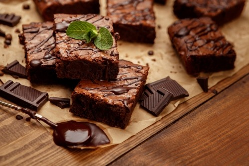
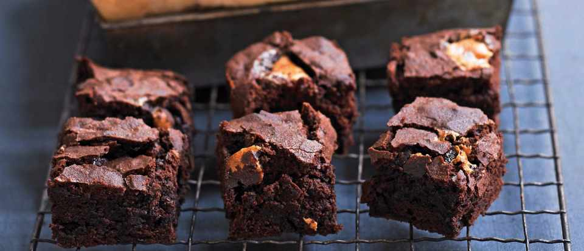

Шоколадовo брауни

Необходими продукти:
- 200 гр. Шоколад
- 100 гр. Масло
- 4 средно големи яйца
- 250 гр. Захар
- 100 гр. Брашно
- 1 ч.л. бакпулвер (ок. 8-10 гр.)

Начин на приготвяне:
- Включете фурната на 180 градуса, за да се загрее. Поставете хартия за
печене
в избраната от вас форма.
Ако не прилепва добре към тавата,
сложете няколко капки олио или малко
масло, за да прилепне плътно.
- Разтопете шоколада и маслото на водна баня или в микровълнова. След
получаване на хомогенна смес, оставете
да се охлади до стайна температура
- В отделна купа разбийте захарта и яйцата, докато
получите лека и
пухкава смес
- Добавете шоколадовата смес към яйчената и полека прибавете сухите
съставки,
които сте смесили предварително
(брашно, какао и бакпулвер).
По възможност ги пресейте през сито
- По ваше желание можете да добавите около 100 гр.
Ядки по ваш избор.
Най-подходящи според мен са орехите.
- Печете около 25 до 30 минути, оставете да се охлади след това и чак
тогава нарежете